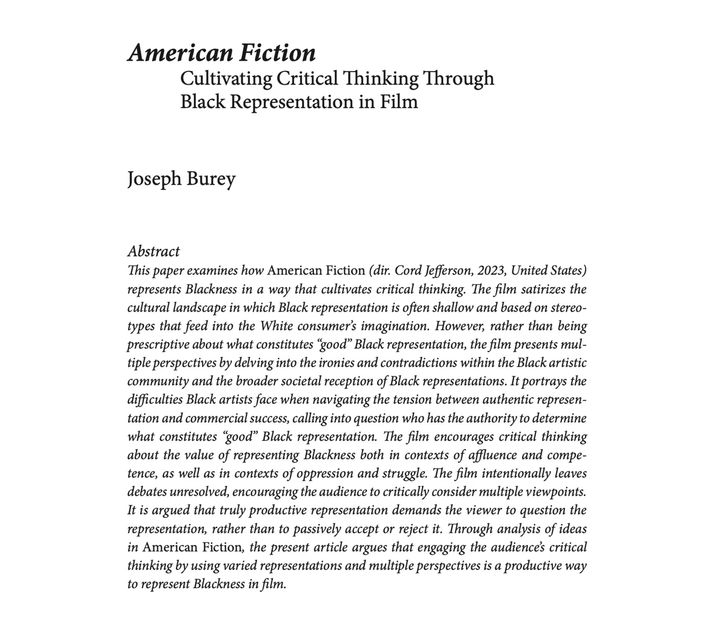

Research
Representation matters, but what type? I study students' psychological responses to self-relevant racial identity representations. My current work focuses on how textual representations with critical contexts influence Black students' understandings and attributions of systemic racism.
Teaching
My teaching is grounded in cultivating critical thinking and an appetite for discovery. I empower students to challenge dominant narratives by engaging critically with historical and societal issues. Ultimately, I seek to develop in students a mode of thinking that inspires them to discover on their own, with both intellectual rigor and compassionate discernment. As Booker T. Washington put it, "The highly educated person is gentle and sympathetic to everyone." To me, this is the kind of education that serves students after their coursework concludes.
Bio
Dr. Joseph Burey is an Assistant Professor of Psychology at Tennessee State University. His research examines how representations with critical contexts influence Black students' understandings of systemic racism. His work has appeared in scholarly outlets such as The Journal of Negro Education, Black Camera, Contemporary Educational Psychology, and Teachers College Record, and has been presented at national conferences of the American Educational Research Association and the American Psychological Association. He has taught undergraduate courses in the fields of Education and Psychology. Joseph is from Windsor, Canada and currently resides in Nashville.
"List of Faves"
Quote: "You have seen how a man was made a slave; you shall see how a slave was made a man." — Frederick Douglass • Book: The Miseducation of the Negro by Carter G. Woodson • Music: Hip Hop • Movie: Cool Runnings • Show: Breaking Bad • Athlete: LeBron James • Team: Toronto Maple Leafs • Cuisine: Jamaican